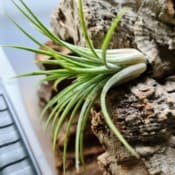
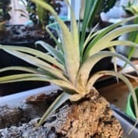
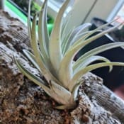
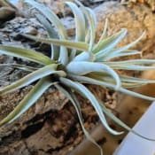
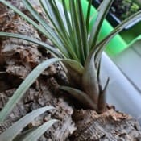
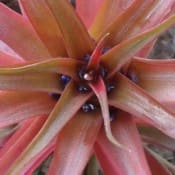

Nom
Exposition en été
Exposition en hiver
Arrosage en été
Arrosage en hiver
Rempotage
TillandsiaVoir la galerie photo





Je le mets dehors à partir de la deuxième quinzaine de Mai jusque courant Octobre dans une situation très lumineuse ou il ne recevra aucun rayon de soleil.
Je ne laisse pas dehors les nuits ou la tempéreture doit passer sous les 15°C.
Je le place en intérieur dans une pièce ou la température ne passera pas sous les 18°C.
J'arrose assez souvent par vaporisation ou en versant de l'eau dessus.
Je profite lors de pluies chaudes de les laisser dehors en hauteur car la pluie au sol fera trop de projections de saletés sur les plantes.
Ne supportent pas la sécheresse.
Je les arrose un peu moins souvent toujours par vaporisation.
Ils se trouvent dans un environnement ou l'air est humide.
Aucun substrat car cette plante est épiphyte.
Je la fais tenir contre une écorce avec un lien durant parfois plusieurs mois le temps que les racines aient assez poussé et puissent tenir la plante sans lien.
Nom
Exposition en été
Exposition en hiver
Arrosage en été
Arrosage en hiver
Rempotage
Tillandsia ionanthaVoir la galerie photo

Je le mets dehors à partir de la deuxième quinzaine de Mai jusque courant Octobre dans une situation très lumineuse ou il ne recevra aucun rayon de soleil.
Je ne laisse pas dehors les nuits ou la tempéreture doit passer sous les 15°C.
Elle prend une belle teinte rouge avant et pendant la floraison.
Je le place en intérieur dans une pièce ou la température ne passera pas sous les 18°C.
J'arrose assez souvent par vaporisation ou en versant de l'eau dessus.
Je profite lors de pluies chaudes de les laisser dehors en hauteur car la pluie au sol fera trop de projections de saletés sur les plantes.
Ne supporte pas la sécheresse.
Je les arrose un peu moins souvent toujours par vaporisation.
Ils se trouvent dans un environnement ou l'air est humide.
Aucun substrat car cette plante est épiphyte.
Je la fais tenir contre une écorce avec un lien durant parfois plusieurs mois le temps que les racines aient assez poussé et puissent tenir la plante sans lien.